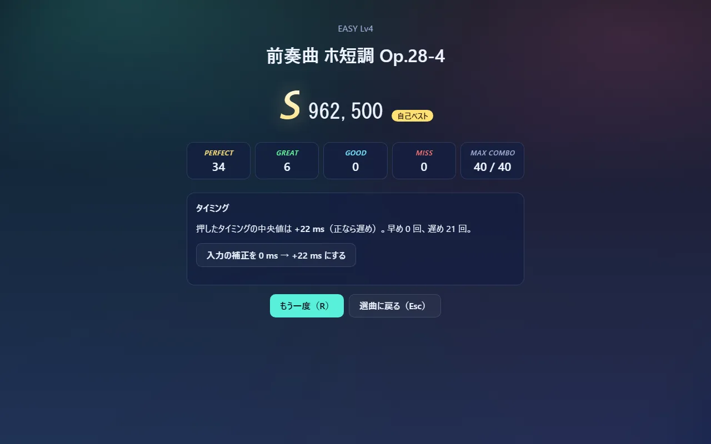

音と画面と入力の時刻をそろえる仕組み
リズムゲームでいちばん難しいのは、聞こえている音・見えているノーツ・押した瞬間の 3 つを同じ時間軸に載せることです。ブラウザの中には時計が 2 種類あり、しかも音はスピーカーから出るまでに遅れます。このゲームはそれを次のように扱います。
ブラウザにある 2 つの時計
| 時計 | 何の時刻か | 使う所 |
|---|---|---|
AudioContext.currentTime（秒） |
音を作る仕組み（Web Audio）の時刻。音の予約はすべてこの時刻で書く | 音を鳴らす |
performance.now()（ミリ秒） |
ページを開いてからの経過時間。キーを押した時刻 e.timeStamp も、画面を書き換える時刻もこの時計 |
描画・判定 |
2 つは別々に進むので、そのままでは「キーを押した瞬間に、曲の何秒目が聞こえていたか」が分かりません。
基準は音の時計 1 つ
このゲームは、曲の時刻はすべて音の時計から決めると決めています。開始のときに「曲の 0 秒を鳴らす AudioContext の時刻」を 1 つ決め（engine.ts L89）、各音はそこからの相対時刻で予約します（contextTimeOf、clock.ts L65）。
音を鳴らす時刻 = 曲の 0 秒の時刻 + 楽譜上の時刻 ÷ 再生速度
予約は毎フレーム、音の時計の今から 0.4 秒先までだけ行います（scheduler.ts L17-30）。1 曲分を一度に予約すると、一時停止や途中でやめたときに取り消すのが大変になるうえ、ブラウザが抱える音の数も増えるためです。予約した音はブラウザが時刻どおりに鳴らすので、画面の処理が重くなっても音のリズムは崩れません。
「いま聞こえている位置」を出す — SongClock
音の時計の「今」は、音を作っている時刻です。スピーカーから聞こえるのはそれより少し後です（Bluetooth のイヤホンなら 100 ms を超えることもあります）。ノーツを判定線に届かせたいのは、聞こえるタイミングです。
SongClock の sampleOffset（clock.ts L15-28）は、「聞こえている音の時計の時刻 − performance.now()」の差を求めます。
- ブラウザが
getOutputTimestamp()を持っていれば、「このperformance.now()の瞬間に、音の時計のこの時刻がスピーカーから出ていた」という組を教えてくれるので、その差を使います。 - その値が音の時計の今から 0.5 秒以上離れていれば壊れているとみなし、
currentTime − baseLatency − outputLatency（ブラウザが申告する遅れを引いた値）で代わりにします。古い Safari では 1. の値がおかしいことが知られているためです。
ブラウザごとにどの値が信用できるかは、調べた結果を docs/research/03-web-audio-timing.md にまとめています。
差が分かれば、performance.now() のどの時刻でも曲の位置に直せます（songTimeAt、clock.ts L58-62）。
曲の位置 = (performance.now()/1000 + 差 − 曲の 0 秒の時刻) × 再生速度
この差は毎フレーム測り直しますが、測るたびに数 ms 揺れます。そのまま使うとノーツが小刻みに震えるので、新しい値に 5% ずつ寄せてならします（L49）。ただし 25 ms を超えて変わったときは、音が途切れたなどで本当にずれたとみなし、すぐ新しい値に切り替えます（L46-47）。
3 つをこの時計でつなぐ
| 何を | どの時刻で | どこ |
|---|---|---|
| 音を鳴らす | 曲の 0 秒の時刻 + 楽譜の時刻 | EventScheduler → contextTimeOf |
| ノーツを描く | 描くときの performance.now() を曲の位置に直し、表示の補正を引く |
engine.frame |
| 判定する | キーが押された瞬間の e.timeStamp を曲の位置に直し、入力の補正を引く |
engine.judgeTime |
判定に e.timeStamp を使うのは、描画で忙しくて処理が遅れても、押した瞬間で判定できるからです。端末によってはこの値が壊れていることがあるので、0 や未来の値、1 秒以上前の値は今の時刻で代用します（eventTimeMs、engine.ts L19-21）。
それでも残るずれは、遊ぶ人が補正する
ブラウザが申告しない遅れ（OS の音の処理、一部の Bluetooth）と、押す人の癖は、コードからは分かりません。そこで 2 つの補正を設定に置いています。
| 設定 | 効き方 |
|---|---|
| 入力の補正 | 判定に使う時刻から引く。正の値にすると、遅めに押しても合う |
| 表示の補正 | 描画に使う時刻から引く。正の値にすると、ノーツが遅れて判定線に届く |
値を決める方法も 2 つ用意しています。
- タイミング調整の画面（Calibrate.tsx）— 0.6 秒おきのクリック音を 20 回鳴らし、合わせて叩いてもらいます。最初の 4 回は耳慣らしとして数えず、残りの「叩いた時刻 − クリックの時刻」の中央値を入力の補正にします（stats.ts L29-39）。平均ではなく中央値なのは、1 回だけ大きく外した叩きに引きずられないためです。
- 結果画面の提案（Result.tsx）— 20 回以上叩いて、ずれの中央値が 12 ms 以上あれば、補正をその分動かすボタンを出します。

一時停止で時計を止める
一時停止では AudioContext そのものを止めます（ctx.suspend()）。音の時計が止まるので、予約済みの音も鳴らず、曲の位置も進みません。再開（ctx.resume()）すると、音の時計は止めた時刻の続きから進むので、曲も止めた位置から続きます。ただし performance.now() との差は止めていた時間の分だけ変わるので、SongClock は覚えていた差を捨てて測り直します（reset、engine.ts L102）。
ただし performance.now() は止まっている間も進みます。描画にそれをそのまま使うと、止まっているはずのノーツが動いて見えます。そこで止めた瞬間の performance.now() を覚えておき、止まっている間はその時刻で描きます（engine.ts L95、L195）。